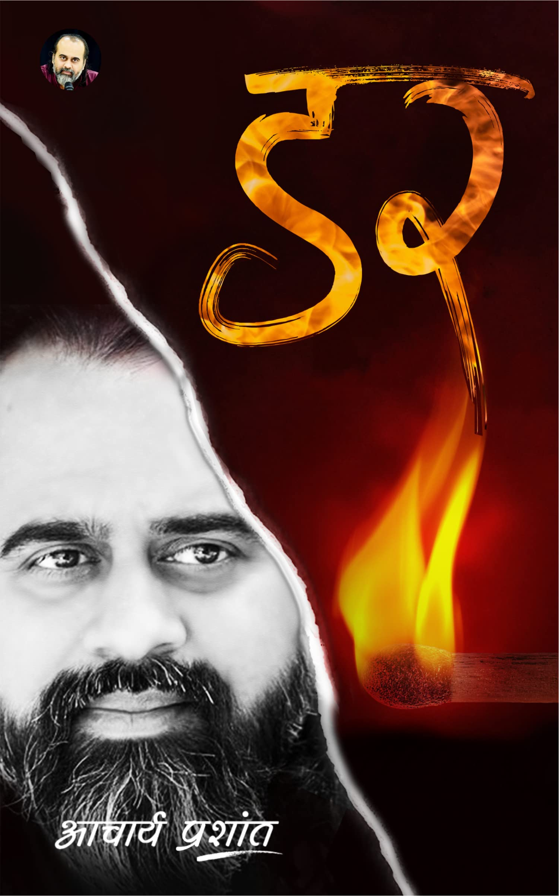
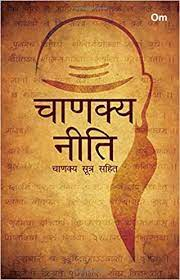
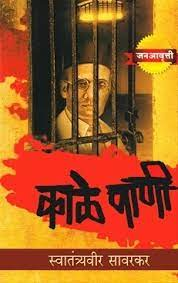
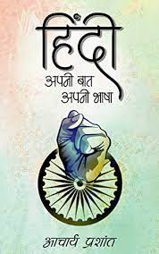
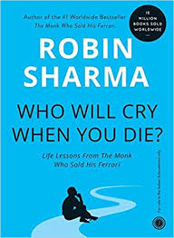

Availables

Available in paperback
अपूर्णता का विचार ही भय का जन्मदाता है। अविवेकी मन उस विचार पर विश्वास कर भयभीत हो उठता है और अपूर्णता के उपचारस्वरूप पाशविक वृत्तियों का अवलम्बन कर लेता है। जिसके कारण उसे सहस्त्र दुःखों से गुज़रना पड़ता है। आचार्य प्रशांत इन संवादों के माध्यम से अपूर्णता के विचार को अकिंचित्कर बता कर उसका तिरस्कार कर एक विवेकपूर्ण जीवन जीने का सन्मार्ग बताते हैं। Rs.350/-

Available in paperback
Chanakya Neeti is a book based on Chanakya, an Indian theorist, teacher, philosopher, economist and a noble mentor to the Mauryan emperors between 350 -275 BC. The book portrays about his ideologies and ideas in diverse situations, which are pertinent even to today's' times. Rs.200/-
Only 2 paperback remaining in stock
DO NOT BUY THIS BOOK IF YOU ARE EASILY OFFENDED Inspired by true stories, Daksh Tyagi's witty and hugely entertaining book 'An Indian citizen's guide on how to avoid A Nation of Idiots' takes on the uncomfortable, the unsettling, and the often misunderstood modern Indian life. WE INDIANS ARE AN INTERESTING BUNCH. Intolerant to the debate on intolerance, but tolerant of religious intolerance. We cling onto age-old traditions, but a holiday can alter our accent. To us, caste and community is a badge of trust, religion is a line of control and a godman is an anti-depressant. We won't stop at a zebra crossing, but we will damn well stop on it. We build things to prove our worth and break things to prove a point. We love the concept of independence, but we need our parents to help raise our kids. And we scripted the Kamasutra. Easy to forget, since we also ruined sex. So how do we tell the real from the farcical? The farcical from the nutty? And the nutty from the downright ridiculous? Easy. We just go along. Daksh Tyagi's funny and insightful 'A Nation of Idiots' is the ideal guide to surviving the modern Indian life with your scruples intact. Rs.350/-

Available in offline mode.
काला पानी की भयंकरता का अनुमान इसी एक बात से लगाया जा सकता है कि इसका नाम सुनते ही आदमी सिहर उठता है। काला पानी की विभीषिका, यातना एवं त्रासदी किसी नरक से कम नहीं थी। विनायक दामोदर सावरकर चूँकि वहाँ आजीवन कारावास भोग रहे थे, अत: उनके द्वारा लिखित यह उपन्यास आँखों-देखे वर्णन का-सा पठन-सुख देता है। इस उपन्यास में मुख्य रूप से उन राजबंदियों के जीवन का वर्णन है, जो ब्रिटिश राज में अंडमान अथवा 'काला पानी' में सश्रम कारावास का भयानक दंड भुगत रहे थे। काला पानी के कैदियों पर कैसे-कैसे नृशंस अत्याचार एवं क्रूरतापूर्ण व्यवहार किए जाते थे, उनका तथ वहाँ की नारकीय स्थितियों का इसमें त्रासद वर्णन है। इसमें हत्यारों, लुटेरों, डाकुओं तथा क्रूर, स्वार्थी, व्यसनाधीन अपराधियों का जीवन-चित्र भी उकेरा गया है। उपन्यास में काला पानी के ऐसे-ऐसे सत्यों एवं तथ्यों का उद्घाटन हुआ है, जिन्हें पढ़कर रोंगटे खड़े हो जाते हैं। Rs.399/-

Only 2 left in stock.
"जो लोग अपनी भाषा की ही इज्ज़त नहीं कर सकते, कहाँ आगे बढ़ेंगे? आध्यात्मिक रूप से नहीं, भौतिक रूप से भी नहीं आगे बढ़ेंगे। भारत को पुनर्जागरण (रेनेसां) चाहिए; हमें सुधार नहीं चाहिए, हमें पुनर्जागरण चाहिए। हमें अपने आप पर यकीन करना सीखना होगा। हज़ार सालों तक मिली सामरिक हारों ने और झूठे इतिहासकारों ने—इन दोनों ने मिलकर के हमें भीतर से बिल्कुल पंगु कर दिया है, छलनी-छलनी कर दिया है। हम टूट गए हैं, हम चूरा-चूरा हो गए हैं। हम ऐसे हो गए हैं जैसे कोई बस रोटी के लिए जिए।" इन संवादों के माध्यम से आचार्य प्रशांत भारतीयों में अपनी ही भाषाओं के प्रति हीनभावना के मूल कारणों को समझाते हैं और उन सभी मूल्यों से अवगत करवाते हैं जो भारतीयों की असल पहचान हैं। Rs.399/-
It will be available shortly.
'Out Of Stock For now'.India, That Is Bharat, the first book of a comprehensive trilogy, explores the influence of European 'colonial consciousness' (or 'coloniality'), in particular its religious and racial roots, on Bharat as the successor state to the Indic civilisation and the origins of the Indian Constitution. It lays the foundation for its sequels by covering the period between the Age of Discovery, marked by Christopher Columbus' expedition in 1492, and the reshaping of Bharat through a British-made constitution-the Government of India Act of 1919. This includes international developments leading to the founding of the League of Nations by Western powers that tangibly impacted this journey. It also puts forth the concept of Middle Eastern coloniality, which preceded its European variant and allies with it in the context of Bharat to advance their shared antipathy towards the Indic worldview. In order to liberate Bharat's distinctive indigeneity, 'decoloniality' is presented as a civilisational imperative in the spheres of nature, religion, culture, history, education, language and, crucially, in the realm of constitutionalism.
Rs.500/-
Read In PDF Form
Novel
Like the phases of the moon, Mostly Dark waxes and wanes with thirty tales of darkness and light. An intriguing maelstrom of broken minds and broken hearts, from revenge to desire, from new found love to soulmates, herein lies a tale for everyone. Prepare your senses for an emotional and sometimes terrifying ride. Free !Biography
An absorbing biography of Swami Vivekananda (1863 - 1902) that presents his vast knowledge of Eastern and Western culture, deep spiritual insight, brilliant conversation, broad human sympathy, and colorful personality. Swami Vivekananda, India's first spiritual and cultural ambassador to the West, proclaimed the universal message of Vedanta: the non-duality of the Godhead, the divinity of the soul, the oneness of existence, and the harmony of religions. This 256 page book details the life of Swami Vivekananda and contains 28 photographs, as well as, an appendix containing the Swami's most important teachings. Free !Learn Drawing for Free!
argeted at young aspiring artists seeking to develop their technical skill and build a repertoire of subjects, especially those in nature. Acclaimed author Lee J. Ames shows readers how to draw dozens of plants with a comprehensive, step-by-step approach. His distinctive drawing method has proven to be successful for children and adults alike over the past thirty years, and has shown artists, from the beginner to advanced level, how to draw everything from animals to airplanes. The revised Draw 50 series gives an old favorite an exciting, new look. Free !
Mushroom Noodles
How sensitive are the Himalayan glaciers to climate and other environmental factors? What are the potential impacts of changes in climate and glaciers on the timing and volume of river flows in the regions and what are the likely implications for water supplies and extreme climatic events such as floods? What water management systems are in place to help adapt to changes in regional hydrologic systems and how might those systems be strengthened? What are the main vulnerabilities of downstream populations to changes in water supplies, what are the prospects for conflict and/or cooperation, and what are the implications for national security? Free !Personal Growth
National Bestseller! As seen on The Today Show! How to enrich your life and destroy doubt in 5 seconds. Throughout your life, you've had parents, coaches, teachers, friends and mentors who have pushed you to be better than your excuses and bigger than your fears. What if the secret to having the confidence and courage to enrich your life and work is simply knowing how to push yourself? Using the science of habits, riveting stories and surprising facts from some of the most famous moments in history, art and business, Mel Robbins will explain the power of a “push moment.” Then, she’ll give you one simple tool you can use to become your greatest self. It takes just five seconds to use this tool, and every time you do you’ll be in great company. More than 8 million people have watched Mel’s TEDx Talk, and executives inside of the world’s largest brands are using the tool to increase productivity, collaboration, and engagement. In The 5 Second Rule, you’ll discover it takes just five seconds to: Become confident Break the habit of procrastination and self-doubt Beat fear and uncertainty Stop worrying and feel happier Share your ideas with courage The 5 Second Rule is a simple, one-size-fits-all solution for the one problem we all face—we hold ourselves back. The secret isn’t knowing what to do—it’s knowing how to make yourself do it. Free !New Arrivals, Book In Advance!
Arriving Soon
A supremely practical and useful book. James Clear distils the most fundamental information about habit formation, so you can accomplish more by focusing on less. Mark Manson, author of The Subtle Art of Not Giving A F*ck. People say when you want to change your life, you need to set big goals. But they’re wrong. World-renowned habits expert James Clear has discovered a simpler system for transforming your life. He knows that lasting change comes from the compound effect of hundreds of small decisions – doing two push-ups a day, waking up five minutes early, or holding a single short phone call. He calls them atomic habits. In this ground-breaking book, Clear reveals how these tiny changes will help you get 1 percent better every day. He uncovers a handful of simple life hacks (the forgotten art of Habit Stacking, the unexpected power of the Two Minute Rule, or the trick to entering the Goldilocks Zone) and delves into cutting-edge psychology and neuroscience to explain why they matter. Along the way, he tells inspiring stories of Olympic gold medalists, leading CEOs and distinguished scientists who have used the science of small habits to stay productive, motivated and happy. These small changes will have a revolutionary effect on your career, your relationships and your life. Rs. 199/-Releasing in next month.
Advait has since long been revered as the crown jewel of all spiritual philosophies. However, there are very few books, if any at all, that practically demonstrate the presence, applications, methods, and benefits of living as per the golden teaching of Advait-Vedanta. This book is a much-needed and rare attempt to bring spirituality and philosophical teachings to everyday life. The author's genius lies in being delightfully able to bridge the abstract world of theorizations and principles with day-to-day circumstances, happenings, emotions, and relationships. With the author, Advait is no longer a transcendental idea, rather it is something that breathes, lives, and grows with us in our routine affairs, and enriches our life and our world as a blessing. The fun starts when the otherwise intimidating philosophy is revealed to the reader as immensely intimate and easily, practically implementable. This is a book not just for the mind, but for life. Rs.357/-Try Healthy Food with Sadguru.
In an era where a great variety of cuisines are just a restaurant away, it has become difficult to choose what to eat. Food products labelled 'healthy' one day are abruptly dismissed as 'lethal' the very next, while 'celebrity diets' are trashed by nutritionists. So what is the correct diet for your body? The answer lies within. In the Yogic tradition, food is alive, with a prana of its own. When consumed, the quality of the food influences the qualities of your body and mind. In A Taste of Well-Being, you will find recipes that have been perfected in the Isha Yoga Centre kitchen. Ranging from simple juices and salads to complete meals of grains, cereals and curries, the recipes are peppered with profound insights from Sadhguru on the process of eating and digestion. A book that will help you discover the potential that lies within you and the joy you can derive from the simple act of eating. Rs.234/-Emergency in India from past
‘When Jayaprakash Narayan, the leader of the JP movement in north India, pressed for the resignation of Prime Minister Indira Gandhi, it prompted her to impose internal Emergency. In this fascinating account, Bipan Chandra traces the events that led up to this moment and makes some startling revelations. He finds that there was a real danger of the JP movement turning fascist, given the fuzzy ideology of Total Revolution, its confused leadership and dependence on the RSS for its organization. At the same time, despite the authoritarianism inherent in the Emergency, particularly with the rising power of Sanjay Gandhi and his Youth Congress brigade, Indira Gandhi did end it and call for elections. Finely argued, incisive and original, this book offers significant insight into those turbulent years and joins the ever-relevant debate on the acceptable limits of popular protest in a democracy Rs.300/-

It will be available in next week.
Life Lessons From The Monk Who Sold His Ferrari Do You Feel that life is slipping by so fast that you might never get the chance to live with the meaning, happiness and joy you know you deserve? If so, then this book will be the guiding light that leads you to a brilliant new way of living. In this easy-to-read yet wisdom-rich manual, the author offers 101 simple solutions to life’s most complex problems, ranging from a little-known method for beating stress and worry to a powerful way to enjoy the journey while you create a legacy that lasts. “When You Were Born, You Cried While The World Rejoiced. Live Your Life In Such A Way That When You Die, The World Cries While You Rejoice.” Ancient Sanskrit Saying Rs. 90/-It will be release soon.
Rich Dad Poor Dad... • Explodes the myth that you need to earn a high income to become rich • Challenges the belief that your house is an asset • Shows parents why they can't rely on the school system to teach their kids about money • Defines once and for all an asset and a liability • Teaches you what to teach your kids about money for their future financial success Rs.190/-Get book on the move

Now available in marathi too
Every common man who by his sheer grit and hard work achieves success should share his story with the rest for they may find inspiration and strength to go on, in his story. The 'Wings of Fire' is one such autobiography by visionary scientist Dr. APJ Abdul Kalam, who from very humble beginnings rose to be the President of India. The book is full of insights, personal moments and life experiences of Dr. Kalam. It gives us an understanding on his journey of success. Dr. Kalam by narrating his life journey evokes the reader to identify with one’s inner fire and potential, for he was of the firm belief that each one of us was born with the strength and potential to make a tangible change in the world. How he inspired himself to achieve dreams and how he went about accomplishing so much is what the book captures nicely. The book recollects many anecdotes and stories from childhood, his time at school and college. The time spent at the Langley Research Center, NASA and Wallops Flight Facility gets a lot of attention. Personal tragedies have not been left out. The time when he lost his father and how he felt when conferred with many awards like the Padma Bhushan have been written in much detail. The second half of the book deals with Dr Kalam, the scientist who made a significant contribution in developing the countries guided missile program, a pioneering effort for the security of the nation. It's not with reason that he was nicknamed as the 'Missile Man of India'. The book also contains 24 photographs at various stages of his life. Authored by Dr APJ Abdul Kalam and Mr. Arun Tiwari, the 180 page book 'The Wings of Fire' was first published in the year 2000. Mr Tiwari is a well-known missile scientist who has worked with Dr. Kalam. Having become a bestseller, the book has even been translated into thirteen languages, which includes Chinese and French. About the Author Dr APJ Abdul Kalam from 2002 to 2007 served as the 11th President of India. Greatly admired all over India, he was a scientist by profession, who played a leading role in developing the country's missile program. From humble roots in Rameswaram, Tamil Nadu, Dr Kalam in an inspirational autobiography 'The Wings of Fire' traces the rise and the mark he made in life. Mr. Arun Tiwari, a scientist, was a colleague of Dr Kalam. Rs.239/-